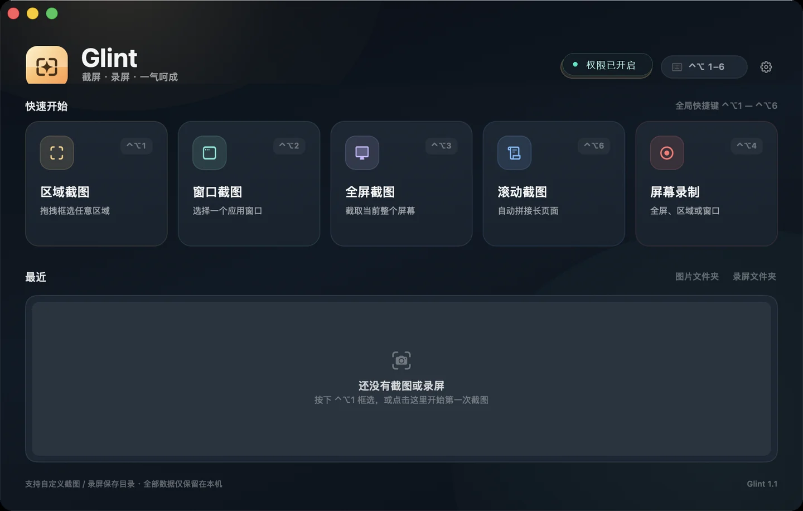
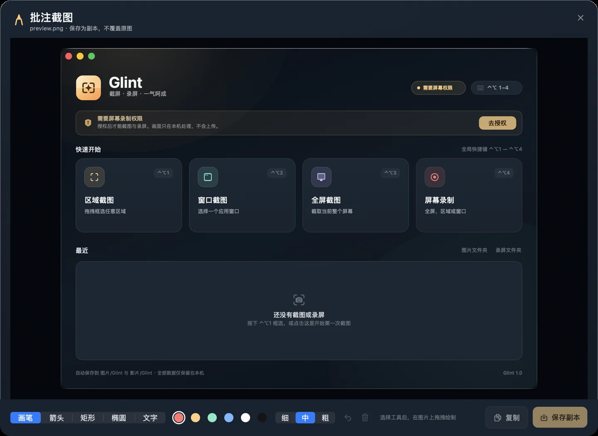
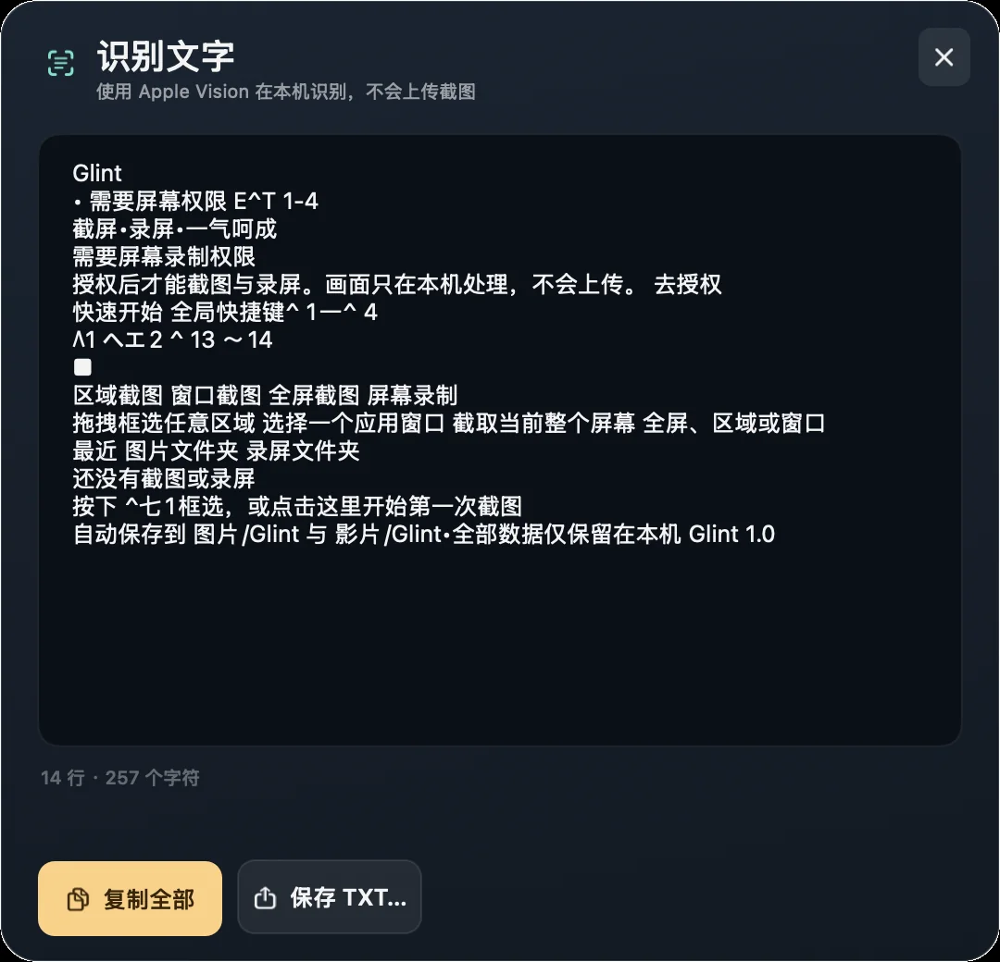
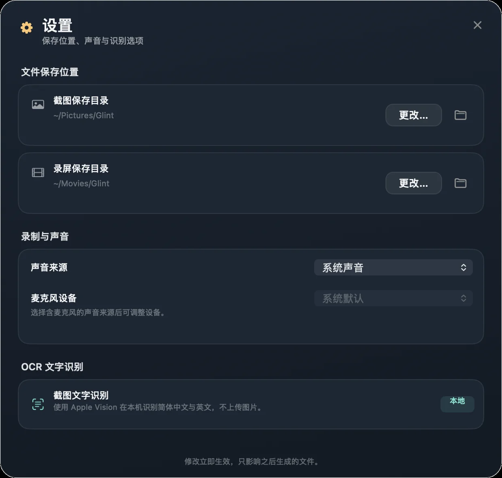
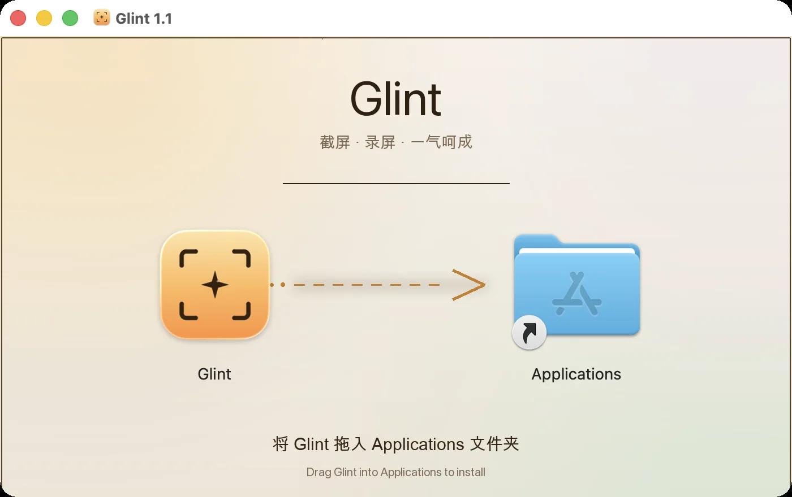

四种截取方式
区域、窗口、全屏和滚动长图。框选时实时显示像素尺寸，松开即完成。
Glint 把区域、窗口、全屏和滚动截图，保存后的批注与本地 OCR，以及可暂停续录的屏幕录制，放进一个安静的原生 macOS 应用。

Glint 用原生 ScreenCaptureKit 和 Apple Vision，把高频工作流压缩成几个快捷键和一次点击。没有订阅、没有云端、没有打扰。
区域、窗口、全屏和滚动长图。框选时实时显示像素尺寸，松开即完成。
画笔、箭头、矩形、椭圆和文字。六种颜色、三种线宽，保存为不覆盖原图的副本。
使用 Apple Vision 识别简体中文与英文，复制全文或保存 TXT。截图不会离开本机。
全屏、区域或窗口录制，随时暂停/继续；支持系统声音、麦克风或两者同时录制。
截图和录屏目录都可以自由更改；修改立即生效，只影响之后生成的文件。
关闭主窗口后仍在菜单栏待命。六项全局快捷键都可自定义，不申请辅助功能或输入监控权限。
全屏截图和整屏录屏先列出所有显示器，显示分辨率、Retina 与鼠标位置，点击即选。
下载任意 HTTP/HTTPS 文件，1–8 线程、进度与速度、取消和 Finder 定位，全部内置。
更新弹窗显示 Release 说明，并自动比对本地文件大小与 SHA-256，只提示真正需要的更新。
不需要在多个应用之间来回切换。Glint 把结果直接交到你手里。
⌃⌥1 到 ⌃⌥4，选择区域、窗口、全屏或开始录屏。滚动截图用 ⌃⌥6。
在结果面板直接批注，或让 OCR 提取文字；所有处理都在本机完成。
截图自动复制到剪贴板，视频可播放预览。复制、导出或交给 Finder，一步完成。
深色原生界面、熟悉的 macOS 操作方式，以及只在需要时出现的工具。下面是它真实的样子。




是的，MIT 开源，没有订阅、广告或功能限制。你可以在 GitHub 上查看源码。
不会。截图、录屏、OCR、批注和导出都在本机完成；唯一的网络请求是可关闭的版本检查，只发送版本号，不包含画面内容。
macOS 要求所有截屏/录屏应用获得“屏幕与系统音频录制”权限。Glint 不申请辅助功能或输入监控权限。
当前发布包是 arm64（Apple Silicon）。Intel 用户可以从源码运行 ./build.sh 自行构建。